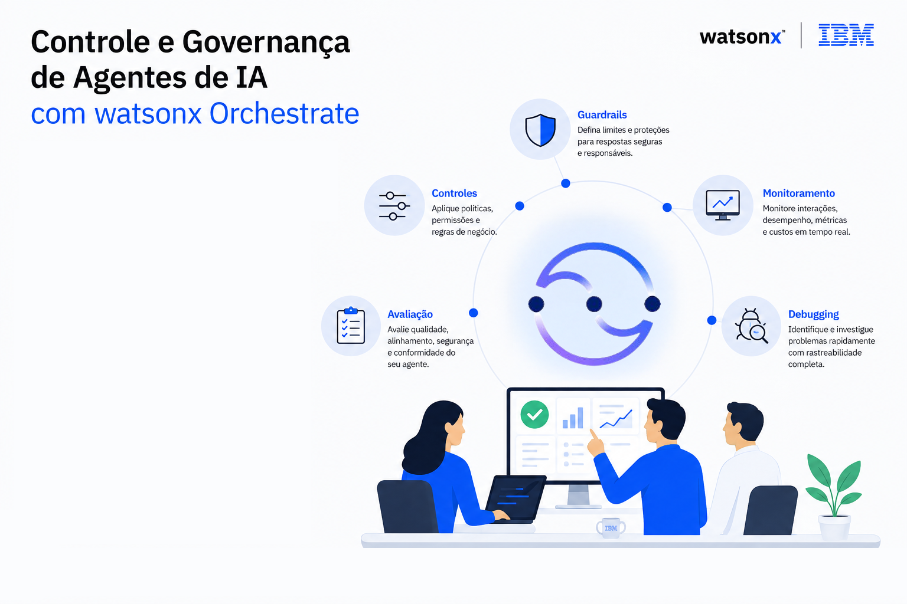
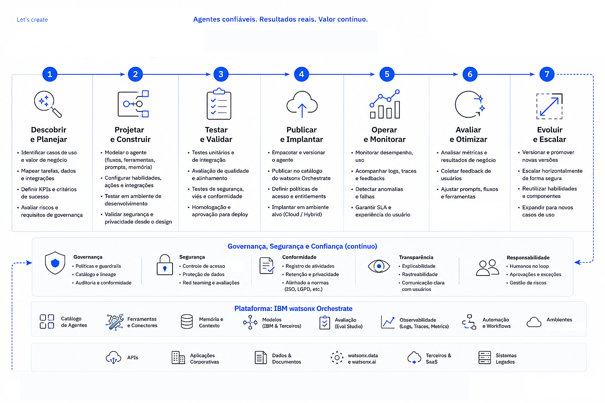

O watsonx Orchestrate é uma plataforma em constante evolução e recebe atualizações frequentes com novos recursos, melhorias e alterações na experiência de criação de agentes e workflows.
Caso esteja acessando este material muito tempo após a data de atualização de referência, algumas etapas, telas ou funcionalidades poderão ser diferentes das apresentadas neste laboratório.
Se você recebeu este conteúdo por meio de um instrutor ou programa de treinamento, não se preocupe: o material foi revisado e atualizado para refletir a experiência mais recente disponível.
As instruções para iniciar o laboratório estão no final deste arquivo.
Antes de começar, reserve alguns minutos para ler todo o conteúdo com atenção. O Time técnico elaborou esse material com muito carinho, e cada seção foi preparada para fornecer contexto, conceitos importantes e dicas que ajudarão você a aproveitar melhor a experiência e a entender o propósito de cada etapa do laboratório.
Laboratório de watsonx Orchestrate
Controle e Governança de Agentes de IA com watsonx Orchestrate
Nos laboratórios de hoje, você aprenderá como implementar práticas de governança para agentes de IA utilizando a interface do watsonx Orchestrate.
Serão abordados conceitos como guardrails, controles, monitoramento, debugging e avaliação de agentes para reduzir riscos relacionados à IA Generativa e garantir operações mais seguras e confiáveis.

Mas porque isso é importante?
Antes de disponibilizar um agente para os usuários, precisamos responder algumas perguntas:
Objetivo
Este laboratório ajuda um time de gerentes de produtos, engenheiros de IA e líderes de negócio a implementar um framework abrangente de governança usando as capacidades integradas de avaliação e monitoramento do watsonx Orchestrate.
Atividades que vamos realizar hoje
Implementar capacidades de Controles e Governança de IA Agêntica para abordar:
Ao completar este laboratório, você ganhará confiança para colocar seus agentes de IA em produção, sabendo que eles atendem padrões de qualidade e entregam valor de negócio mensurável.
Valor para o seu Negócio
Prevenir proliferação de agentes: A proliferação descontrolada de agentes aumenta a complexidade, o custo computacional e os riscos, daí a necessidade de gerenciar e governar um grande número de agentes em uma organização.
Proteção de reputação: As organizações precisam garantir que seus sistemas de IA operem de forma segura, ética e alinhada às políticas corporativas. Falhas como ataques de prompt injection, respostas incorretas, geração de conteúdo inadequado ou execução de ações não autorizadas podem impactar a confiança dos usuários, gerar riscos operacionais e comprometer a reputação da empresa.
Infrações regulatórias e questões legais: Muitos riscos de IA são abordados por leis e regulamentos em muitas jurisdições. Embora um dos laboratórios os aborde com maior detalhe, as ferramentas de gerenciamento de risco abordadas neste laboratório também ajudam a reduzir potenciais questões de conformidade legal e regulatória.
Produtividade: Economia de tempo ao automatizar avaliações, controles de qualidade e o monitoramento de modelos e sistemas de IA.

Pré Requisitos
- Laptop/Computador com acesso a internet
- Acesso ao watsonx Orchestrate
- Acesso aos arquivos complementares que você irá utilizar nesse laboratório fornecido pelo instrutor do laboratório
Iniciando o laboratório
Pronto para iniciar?